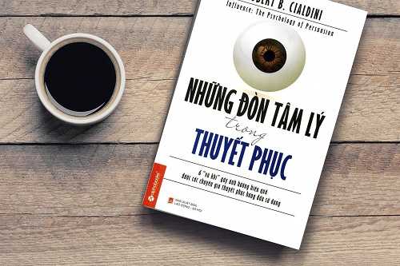

sách Tâm lý học nền tảng

Influence: The Psychology of Persuasion (bản tiếng Việt thường được gọi là “Những đòn tâm lý trong thuyết phục”) của Robert Cialdini là một cuốn kinh điển về tâm lý học ảnh hưởng.
Ý chính của cuốn sách:
Con người rất thường ra quyết định không hoàn toàn bằng lý trí, mà bằng những lối tắt tâm lý. Ai hiểu được các lối tắt này sẽ thuyết phục hiệu quả hơn.
6 nguyên tắc nổi tiếng của Cialdini
• Có đi có lại (Reciprocity)
Khi ai đó cho ta thứ gì trước, ta có xu hướng muốn đáp lại.
Ví dụ: cho dùng thử miễn phí, tặng quà nhỏ trước khi bán hàng.
• Cam kết và nhất quán (Commitment & Consistency)
Khi đã nói “đồng ý” một điều nhỏ, con người thường muốn giữ hình ảnh nhất quán và dễ đồng ý tiếp điều lớn hơn.
• Bằng chứng xã hội (Social Proof)
Ta dễ tin điều nhiều người khác đang làm.
Ví dụ: “sản phẩm bán chạy”, “10.000 người đã dùng”.
• Uy quyền (Authority)
Ta dễ bị thuyết phục hơn khi thông tin đến từ chuyên gia, bác sĩ, người có chức danh.
• Thiện cảm (Liking)
Ta dễ đồng ý với người mình thích, thấy quen, thấy giống mình.
• Khan hiếm (Scarcity)
Càng hiếm, càng thấy có giá trị.
Ví dụ: “chỉ còn 2 suất”, “ưu đãi kết thúc hôm nay”.
Nói ngắn gọn
Cuốn sách này không dạy “mánh khóe” theo nghĩa hẹp.
Nó chỉ ra rằng rất nhiều quyết định hàng ngày của con người bị dẫn dắt bởi các cơ chế tâm lý lặp đi lặp lại.
Nếu tóm một câu:
Con người thường không bị thuyết phục vì lập luận tốt hơn, mà vì cách thông tin chạm đúng phản xạ tâm lý.
Tham khảo thêm:
* "Hiệu Ứng Chim Mồi"
* "Một phút tâm lý, một phút hiểu đời" - Oopsy